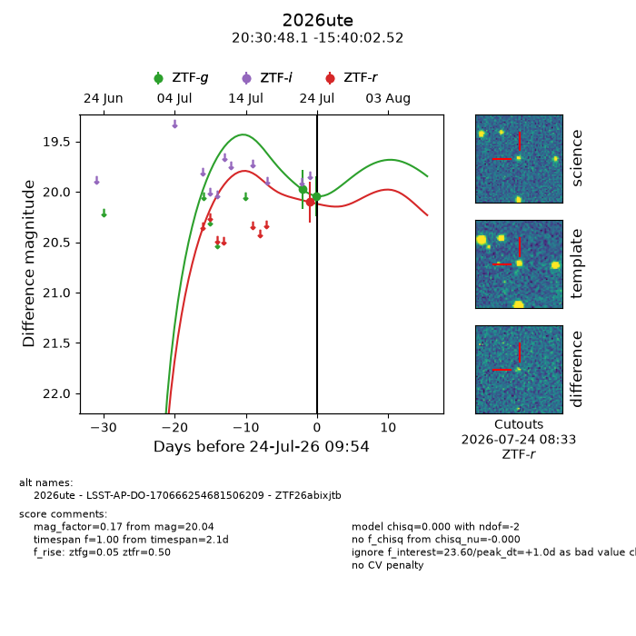
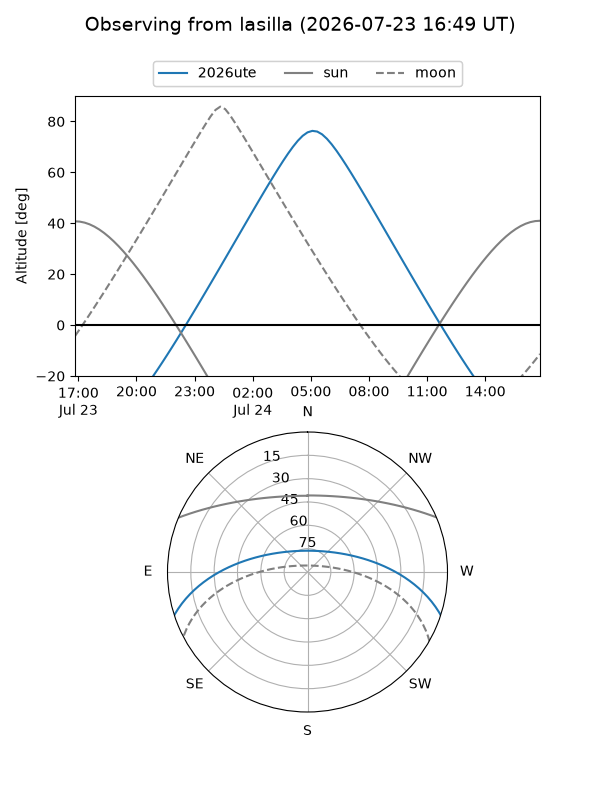
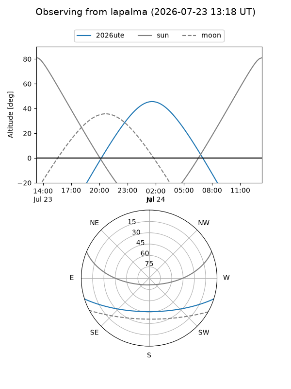
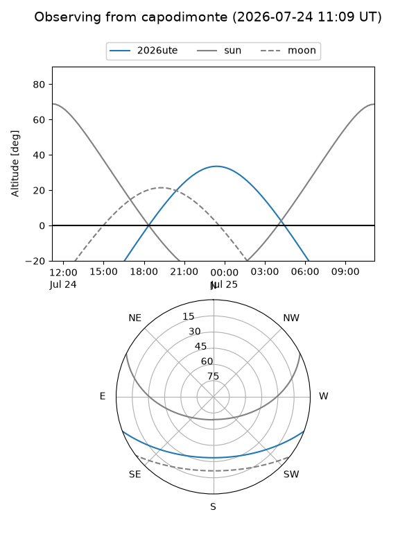
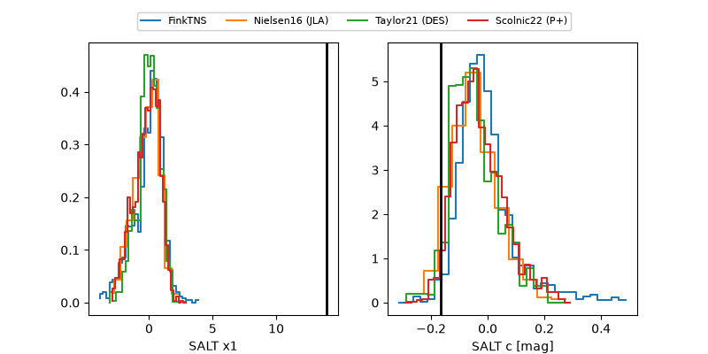

2026ute
Target 2026ute at 2026-07-24 09:56
Aliases and brokers:
FINK-ZTF: ztf.fink-portal.org/ZTF26abixjtb
Lasair-ZTF: lasair-ztf.lsst.ac.uk/objects/ZTF26abixjtb
ALeRCE-ZTF: alerce.online/object/ZTF26abixjtb
YSE-PZ: ziggy.ucolick.org/yse/transient_detail/2026ute
TNS name: wis-tns.org/object/2026ute
Direct TNS query: direct search
alt names
ZTF26abixjtb (ztf,fink_ztf)
2026ute (tns,yse)
LSST-AP-DO-170666254681506209 (iau_lsst)
Coordinates:
equatorial (ra, dec) = 307.7003,-15.66737
equatorial (HMS+DMS) = 20:30:48.07,-15:40:02.52
galactic (l, b) = (29.2712,-28.89008)
Flags:
TNS type: nan
peak dt: +1.0
Photometry:
last ztfg=20.04, ztfr=20.10
2 ztfg, 1 ztfr detections
Lightcurve

Visibility



Additional plots
